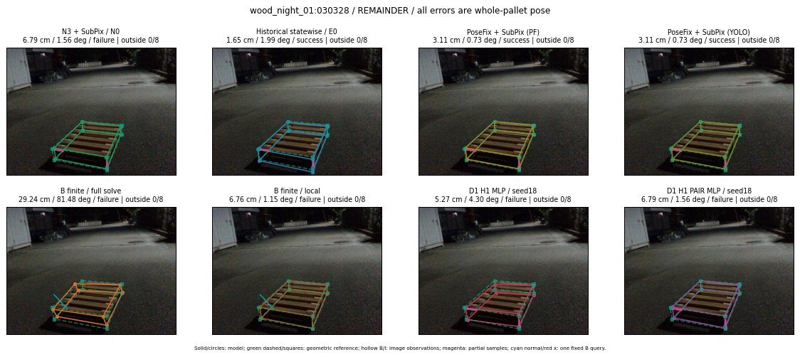

Whole-pallet pose errors; reference is a fixed geometric annotation, not certified physical GT.

Scores are uncalibrated logits. N0 retention is a numerical pose alias; it differs from H0 none or B fallback. B/I and profiles in baseline/B panels are original observations; L panels use new D1 observations. Only one deterministic supported B query is shown in a thumbnail; full support counts are below. Grey privacy rectangles edit the display copy only and are unrelated to O states; all observations were measured on original pixels. Thumbnails use JPEG quality85; detailed scientific panels are PNG.
| Method | Whole pose / cm, deg | Actual source | Selected ID | Score | Archived candidates | Eligible | N0 retained | H0 none | Fallback | Finite profiles |
|---|---|---|---|---|---|---|---|---|---|---|
| Raw YOLO + F | 7.47 cm / 1.84 deg / failure | OTHER | None | N/A | N/A | N/A | False | N/A | None | N/A |
| N3 + SubPix / N0 | 6.79 cm / 1.56 deg / failure | N0 | None | N/A | N/A | N/A | True | N/A | None | N/A |
| Historical statewise / E0 | 1.65 cm / 1.99 deg / success | E0_REGENERATED | None | N/A | N/A | N/A | False | N/A | False | N/A |
| PoseFix raw | 3.11 cm / 0.73 deg / success | OTHER | None | N/A | N/A | N/A | False | N/A | None | N/A |
| PoseFix + SubPix (PF) | 3.11 cm / 0.73 deg / success | OTHER | None | N/A | N/A | N/A | False | N/A | False | historical support records 9; finite audit N/A |
| PoseFix + SubPix (YOLO) | 3.11 cm / 0.73 deg / success | OTHER | None | N/A | N/A | N/A | False | N/A | False | historical support records 9; finite audit N/A |
| Historical L, seed18 | 6.79 cm / 1.56 deg / failure | N0 | N0 | N/A | 52 | 51 | True | True | True | N/A |
| Historical B fixed bank | 3.27 cm / 2.17 deg / success | OTHER | G10/ORIGINAL_WD/sample/0 | N/A | N/A | N/A | False | N/A | False | N/A |
| Historical B full | 8.17 cm / 8.18 deg / failure | OTHER | NEW/B/ORIGINAL_WD/h0/G13/ORIGINAL_WD/sample/0/PROPOSED_NATIVE_YAW_0 | N/A | N/A | N/A | False | N/A | False | N/A |
| Historical edge full | 49.02 cm / 87.67 deg / failure | OTHER | NEW/edge/SWAPPED_WD/h3/G13/ORIGINAL_WD/sample/1/PROPOSED_NATIVE_YAW_3 | N/A | N/A | N/A | False | N/A | False | N/A |
| Historical AB full | 8.17 cm / 8.18 deg / failure | OTHER | NEW/AB/ORIGINAL_WD/h0/G13/ORIGINAL_WD/sample/0/PROPOSED_NATIVE_YAW_0 | N/A | N/A | N/A | False | N/A | False | N/A |
| B finite / fixed bank | 3.27 cm / 2.17 deg / success | OTHER | G10/ORIGINAL_WD/sample/0 | N/A | N/A | N/A | False | N/A | False | 17/17 |
| B finite / full solve | 29.24 cm / 81.48 deg / failure | OTHER | NEW_FINITE/B/SWAPPED_WD/h3/G13/ORIGINAL_WD/sample/1/PROPOSED_NATIVE_YAW_3 | N/A | N/A | N/A | False | N/A | False | 17/17 |
| B finite / local | 6.76 cm / 1.15 deg / failure | OTHER | NEW_FINITE/B/ORIGINAL_WD/h0/N0_LOCAL_SAME_PHYSICAL_POSE/ORIGINAL_WD | N/A | N/A | N/A | False | N/A | False | 17/17 |
| Edge finite / full solve | 5.27 cm / 4.30 deg / failure | OTHER | G10/ORIGINAL_WD/sample/1 | N/A | N/A | N/A | False | N/A | False | 17/17 |
| D0 H0 MLP / seed18 | 6.79 cm / 1.56 deg / failure | N0 | N0 | 0.658327579498291 | 22 | 21 | True | True | True | N/A |
| D0 H0 MLP / seed19 | 6.79 cm / 1.56 deg / failure | N0 | N0 | 1.3198490142822266 | 22 | 21 | True | True | True | N/A |
| D0 H0 MLP / seed20 | 6.79 cm / 1.56 deg / failure | N0 | N0 | -2.2997817993164062 | 22 | 21 | True | True | True | N/A |
| D0 H1 MLP / seed18 | 6.79 cm / 1.56 deg / failure | N0 | N0 | -4.385540008544922 | 22 | 21 | True | False | False | N/A |
| D0 H1 MLP / seed19 | 6.79 cm / 1.56 deg / failure | N0 | N0 | -3.427060604095459 | 22 | 21 | True | False | False | N/A |
| D0 H1 MLP / seed20 | 6.79 cm / 1.56 deg / failure | N0 | N0 | -4.9344964027404785 | 22 | 21 | True | False | False | N/A |
| D1 H0 MLP / seed18 | 6.79 cm / 1.56 deg / failure | N0 | N0 | 6.465460777282715 | 22 | 21 | True | True | True | N/A |
| D1 H0 MLP / seed19 | 6.79 cm / 1.56 deg / failure | N0 | N0 | 5.706864833831787 | 22 | 21 | True | True | True | N/A |
| D1 H0 MLP / seed20 | 6.79 cm / 1.56 deg / failure | N0 | N0 | 5.282694339752197 | 22 | 21 | True | True | True | N/A |
| D1 H1 MLP / seed18 | 5.27 cm / 4.30 deg / failure | OTHER | WD0/ORIGINAL_WD/selected | -2.6652286052703857 | 22 | 21 | False | False | False | N/A |
| D1 H1 MLP / seed19 | 5.27 cm / 4.30 deg / failure | OTHER | WD0/ORIGINAL_WD/selected | -2.984713315963745 | 22 | 21 | False | False | False | N/A |
| D1 H1 MLP / seed20 | 6.79 cm / 1.56 deg / failure | N0 | N0 | -3.0928287506103516 | 22 | 21 | True | False | False | N/A |
| D1 H1 ROLE AFFINE / seed18 | 6.79 cm / 1.56 deg / failure | N0 | N0 | -0.8745484352111816 | 22 | 21 | True | False | False | N/A |
| D1 H1 ROLE AFFINE / seed19 | 6.79 cm / 1.56 deg / failure | N0 | N0 | -0.4488324820995331 | 22 | 21 | True | False | False | N/A |
| D1 H1 ROLE AFFINE / seed20 | 6.79 cm / 1.56 deg / failure | N0 | N0 | -0.6294555068016052 | 22 | 21 | True | False | False | N/A |
| D1 H1 PAIR MLP / seed18 | 6.79 cm / 1.56 deg / failure | N0 | N0 | -1.8729249238967896 | 22 | 2 | True | False | False | N/A |
| D1 H1 PAIR MLP / seed19 | 6.79 cm / 1.56 deg / failure | N0 | N0 | -1.8851577043533325 | 22 | 2 | True | False | False | N/A |
| D1 H1 PAIR MLP / seed20 | 6.79 cm / 1.56 deg / failure | N0 | N0 | -2.0473430156707764 | 22 | 2 | True | False | False | N/A |
| D1 H1 PAIR ROLE AFFINE / seed18 | 6.79 cm / 1.56 deg / failure | N0 | N0 | -1.0998610258102417 | 22 | 2 | True | False | False | N/A |
| D1 H1 PAIR ROLE AFFINE / seed19 | 6.79 cm / 1.56 deg / failure | N0 | N0 | -1.1060075759887695 | 22 | 2 | True | False | False | N/A |
| D1 H1 PAIR ROLE AFFINE / seed20 | 6.79 cm / 1.56 deg / failure | N0 | N0 | -0.8358553051948547 | 22 | 2 | True | False | False | N/A |
| Regenerated common E0 | 1.65 cm / 1.99 deg / success | E0_REGENERATED | E0_REGENERATED | N/A | N/A | N/A | False | N/A | False | N/A |